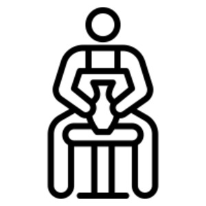
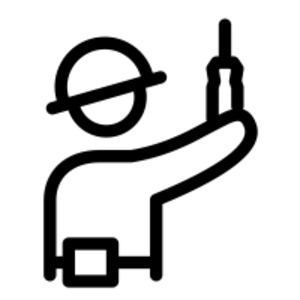

ϩⲁⲙ S, ϩⲁⲙ- SAA2BF, ϩⲙ- S, ⲁⲙ- B, pl ϩⲙⲏⲩ, -ⲉⲩ S & sg as pl, nn m, craftsman SF: BKU 1 308 ⲏⲗⲓⲁⲥ ⲫⲁⲙ, Hall 106 ϣⲉⲛⲟⲩⲧⲉ ⲡϩ., Saq 6 ⲡⲇⲓⲁⲕⲱⲛ ⲓⲉⲣⲏⲙⲓⲁⲥ ⲫ., CMSS 78 F ⲑⲉⲩⲧⲱⲥⲓ ⲫ., WZKM 26 338 ⲁⲡⲁ ⲕⲩⲣⲟⲥ ϩ. (or ? name), Ep 76 ⲡⲃⲉⲕⲉ ⲙⲡϩ., Hall 108 wage to ⲫ. who mended cart, also to ⲃⲉⲥⲛⲏⲧ, Ryl 365 ⲛϭⲗϭⲓϫ (quid ?) let him write to ⲡϩ. ϥⲥⲙⲛⲧⲟⲩ, Ep 547 tools ⲉⲓⲛⲉ ⲛϩ., ⲙⲁϫⲉ ⲛϩ.; pl: AZ 60 107 ⲧⲕⲟⲓⲛⲟⲧⲏⲥ ⲛⲛϩⲙⲉⲩ ⲛⲁⲣⲁ (ib ⲛϩⲁⲙ ⲛⲁⲣⲁ), Ep 437 ⲛⲉϩⲙⲏⲩ will not work unpaid, ST 46 ⲛϩⲙⲏⲩ doing woodwork in τόπος; ϩⲁⲙⲕⲗⲗⲉ, -ⲕⲉⲗⲓ v ⲕⲗⲗⲉ s f, ϩⲁⲙⲛⲟⲩⲃ v ⲛⲟⲩⲃ s f, ϩⲁⲙϣⲉ, ⲁⲙϣⲉ v ϣⲉ wood s f, adding ManiK 132 A2 ϩ., Saq 6, 78 S ⲫⲙϣⲉ, ϩⲁⲙ ⲛⲁⲣⲁ, chainsmith (?), v AZ above, ϩ. ⲛⲃⲟⲗⲃⲉⲗ v ⲃⲟⲗⲃⲗ I, ϩ. ⲛⲕⲁⲗⲕⲉⲗ v ⲕⲟⲗⲕⲗ, ϩ. ⲥⲟⲩⲣⲉ (?) ST 352, ϩ. ⲁⲕⲏ WS 140 (cf 141 n & Φαμακεῖ Preisigke), Φαμϫόι (Preis.), ϩαμποί v ⲡⲟⲓ. As name (?): Φάμ (Preis.).
(noun male)
person
craftsman


complete
673b
See also:
| view | ⲥⲁ SABF | (noun male) man + genitive ⲛ-, man of, maker of, dealer in1365 |